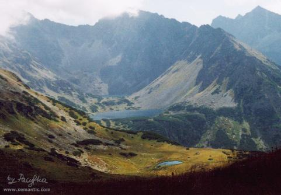
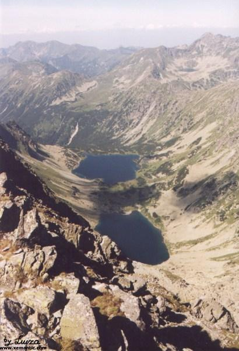
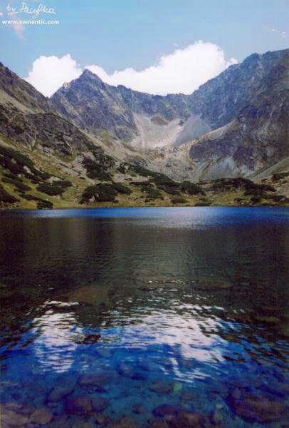
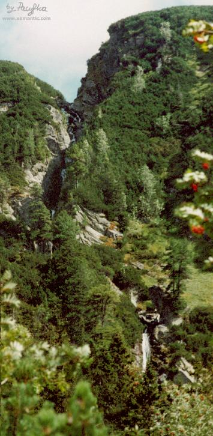
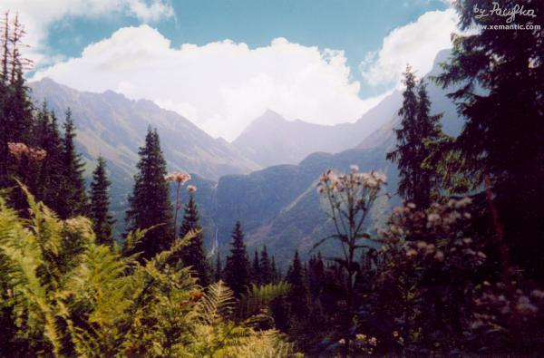

| "...głęboko na dnie - lśni i marzy
Ciemnosmreczyński Staw..." Ciemnosmreczyńskie Stawy, widziane spod Przełęczy Zawory fot. Pacyfka |

|
Krzak dzikiej róży w Ciemnych Smreczynach I W ciemnosmreczyńskich skał zwaliska,
U stóp mu bujne rosną trawy,
Samotny, senny, zadumany,
Cisza... O liście wiatr nie trąca,
II Słońce w niebieskim lśni krysztale,
Szumna siklawa mknie po skale,
W skrytych załomach, w cichym schronie,
Do ścian się tuli, jakby we śnie,
III Lęki! wzdychania! rozżalenia,
Stado się kozic rozprzestrzenia;
A między zielska i wykroty,
Przy nim ofiara, ach! zamieci,
IV O rozżalenia! o wzdychania!
W dali echowe słychać grania:
W seledyn stroją się niebiosy,
A cichy powiew krople strąca
|

"...ciemnosmreczyńskich skał zwaliska, Gdzie pawiookie drzemią stawy..." widziane z Koprowego Wierchu fot. Luiza  "Słońce w niebieskim lśni krysztale..." Ciemnosmreczyński Staw Niżni fot. Pacyfka  "Szumna siklawa mknie po skale..." Ciemnosmreczyńska Siklawa, fot Pacyfka |
|  |
W górze zimno, ostro, cnotliwie. - Tu - ciepło, duszno, zgniło - Dolina Ciemnosmreczyńska (Piarżysta) fot. Pacyfka |